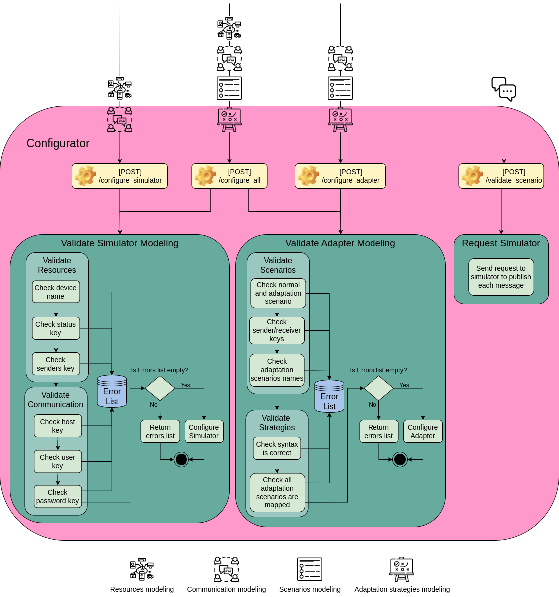

@@include('header.htm')

@@include('blocks/navigation-inner.htm')

<!-- details page -->
<section class="pt-5">
  <div class="container shadow section-sm rounded">
    <div class="row">
      <!-- sidebar -->
      <div class="col-lg-3">
        <ul class="sidenav">
          <li title="Genreral Info" class="sidelist">
            <a href="list.html">Genreral Info</a>
          </li>
          <li class="sidelist parent active">
            <a href="components.html">Components</a>
            <ul>
              <li class="sidelist active">
                <a href="configurator.html">Configurator</a>
              <li class="sidelist">
                <a href="simulator.html">Simulator</a>
              <li class="sidelist">
                <a href="adapter.html">Adapter</a>
            </ul>
          </li>
          <li class="sidelist parent">
            <a href="list.html">Tutorial</a>
            <ul>
              <li class="sidelist">
                <a href="single.html">Startup</a>
              <li class="sidelist">
                <a href="envaiot-ml.html">EnvAIoT-ML</a>
            </ul>
          </li>
        </ul>
      </div>

      <!-- body -->
      <div class="col-lg-8">
        <div class="px-lg-5 px-4">
          <h2 class="mb-4 font-weight-medium">Components</h2> <!-- main content -->
          <div class="content">
            <p>The Configurator operates in accordance with the shown in Figure below.
              It is a component that has been built as an API and offers endpoints to which the user may
              send the system's modelling components. With the POST method, the Configurator offers three
              endpoints:
            <ul>
              <li><i>/configure_all</i>, which receives modelling for all four system components;</li>
              <li><i>/configure_simulator</i>, which receives modelling for resources and communication;</li>
              <li><i>/configure_adapter</i> which receives modelling for resources, communication, scenarios, and
                adaptation strategies;</i></li>
              <li><i>/validate_scenario</i>, which receives a list of messages to be published in sequence.</li>
            </ul>
            For the routes that receives the modelling, it goes through a validation procedure. Since the
            Configurator configures the two other components, it has two validations, one for the Simulator
            and the other for the Adapter. Only the modelling syntax is validated during the process.
            </p>
            <p></p>
            <p>
              The resources and the communication models must be validated before the Simulator can be configured.
              In the case of the first, it verifies that the device name has at least one capitalized letter
              (since it is necessary for the creation of the queue) and is free of any blanks or symbols.
              The "status" key is then checked for presence. In case the user decides to fill up the senders list,
              it checks to see if the "senders" key is present and, if it is, verifies that the right references
              to the names of the device are available. The validation of the communication modelling then begins.
              It does so by determining if the "host," "user," and "password" keys are present. If a mistake is
              discovered during each check, the list of errors is increased. It then confirms that the error list
              is empty after the tests. If so, everything is fine for setting the Simulator; if not, it returns the
              error list.
            </p>
            <p>
              The Configurator examines the scenarios and the strategies to verify the Adapter modelling.
              It examines if the normal and adaptation scenarios were constructed in order to validate the scenarios.
              Additionally, it verifies that the adaptation scenario names do not contain any blanks or symbols and the
              "sender" or "receiver" keys are present. It then moves on to verifying the strategies. For that, it
              verifies
              that the language's syntax is proper and that the adaptation scenarios are mapped for a strategy.
              The errors are also stored in an error list throughout this procedure. In order to setup the Adapter,
              it checks at the end to see if the errors list is empty. Instead, the error list is returned.
            </p>
            <p>
              The validator scenario endpoint does not perform a validation process. It receives a list of messages,
              where each item must contain a "from" or "to" key to specify the resource that will publish or receive
              the message. Also, it also contains the "message" key, where the message is detailed.
            </p>
            <p>
              The Controller and the Validator are the two levels of the Configurator code. The Validator has the code
              to
              validate the models, and the Controller has all the endpoints configured. As a result, the Controller gets
              the requests, executes the Validator routines, and, if there are any mistakes, returns them;
              alternatively,
              if the modeling is accurate overall, it sends requests to configure the other components.
            </p>
          </div>
          <!-- navigation -->
          <nav class="pagination">
            <a class="nav nav-prev" href="/components.html"><i class="ti-arrow-left mr-2"></i>
              <span class="d-none d-md-block">Components</span></a>
            <a class="nav nav-next" href="/simulator.html"> <span class="d-none d-md-block">Simulator</span><i
                class="ti-arrow-right ml-2"></i></a>
          </nav>
        </div>
      </div>
    </div>
  </div>
</section>
<!-- /details page -->

@@include('blocks/footer.htm')

@@include('footer.htm')